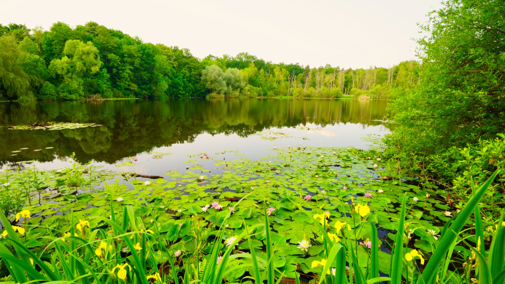
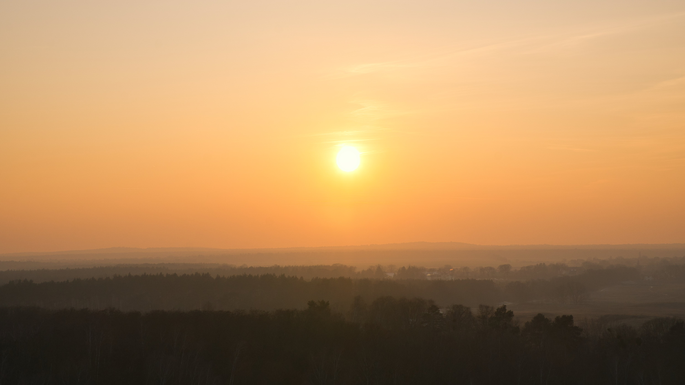
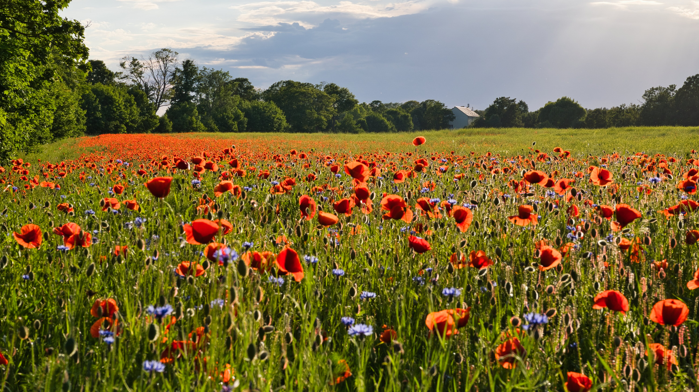
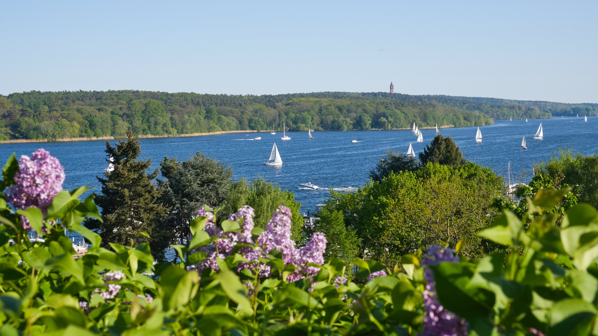
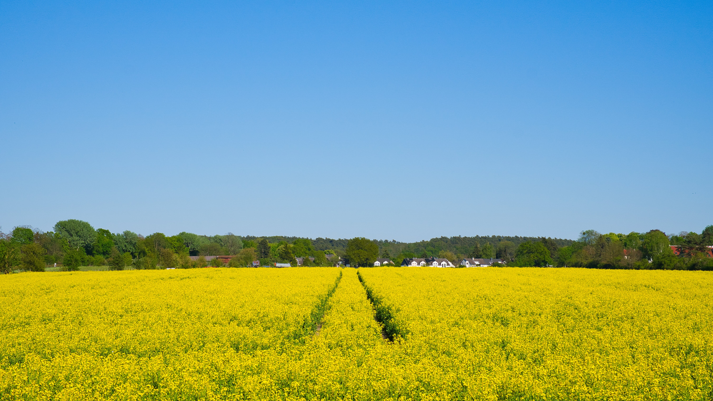
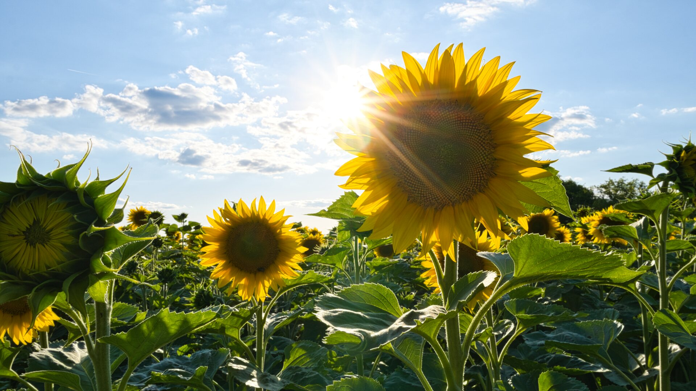
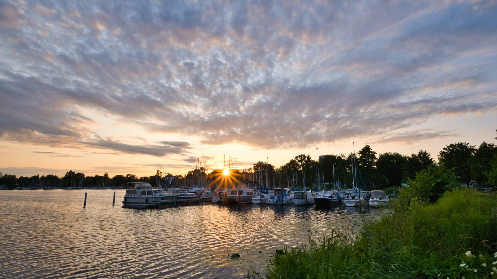

Nächste Termine
🥾 Wanderung: Durch das Biesenthaler Becken - Feuchtgebiete
🕙 Uhrzeit: 09:50 Uhr
📍 Treffpunkt: Bahnhof Berlin-Spandau am Gleis 5 (RE2 nach Cottbus Hbf)
🚶 Strecke: ca. 12,8 km
🗺️ Wanderroute: Route auf Komoot ansehen ↗
🥾 Wanderung durch das Biesenthaler Becken
Am 15. November geht es gemeinsam auf Entdeckungstour durch das wunderschöne Biesenthaler Becken in Brandenburg. Euch erwartet eine abwechslungsreiche Naturlandschaft mit Wäldern, idyllischen Wegen und herbstlichen Eindrücken.
🚆 Anreise ab Berlin-Spandau
Die Anreise dauert etwa 1 Stunde und 36 Minuten. Die Fahrt erfolgt mit öffentlichen Verkehrsmitteln:
- Start am Bahnhof Berlin-Spandau
- Umstieg in Berlin Gesundbrunnen
- Weiterfahrt bis zum Bahnhof Bernau
- Umstieg in den Bus Richtung Biesenthal
- Ausstieg an der Haltestelle Biesenthal Schule
🌳 Start der Wanderung
Von der Haltestelle Biesenthal Schule aus beginnt die gemeinsame Wanderung durch das Biesenthaler Becken. Unterwegs erwarten uns schöne Naturabschnitte, ruhige Waldwege und abwechslungsreiche Landschaften.
📸 Herbstliche Natur und Fotomotive
Natürlich bietet die Wanderung auch eine schöne Gelegenheit, die herbstliche Landschaft mit der Kamera festzuhalten. Ob farbenfrohe Blätter, besondere Lichtstimmungen oder kleine Naturdetails – es gibt sicherlich einige schöne Fotomotive zu entdecken.
Ich freue mich auf einen entspannten Tag in der Natur, schöne fotografische Eindrücke und angenehme Begegnungen!
📸 Fotowalk zur blauen Stunde auf dem Hahneberg
🕙 Uhrzeit: 06:30 Uhr
📍 Treffpunkt: Bushaltestelle Heerstraße/Magistratsweg
Erlebe den frühen Morgen auf dem Hahneberg in Berlin-Staaken und entdecke die besondere Atmosphäre der blauen Stunde. Gemeinsam möchten wir die ruhige Morgenstimmung, interessante Lichtverhältnisse und den Sonnenaufgang fotografisch festhalten.
Der Hahneberg bietet eine schöne Gelegenheit, die morgendliche Landschaft aus einer anderen Perspektive zu erleben. Besonders die wechselnden Farben des Himmels, die ersten Lichtstrahlen und die ruhige Atmosphäre machen diesen Foto-Walk zu einem besonderen Erlebnis.
📷 Für wen ist der Foto-Walk geeignet?
Egal, ob du mit einer Spiegelreflexkamera, einer Systemkamera oder deinem Smartphone fotografierst: Jeder, der Freude an Fotografie und Natur hat, ist herzlich willkommen.
Ich freue mich auf einen schönen fotografischen Morgen und interessante Begegnungen!
Fotogalerie
Einige Eindrücke aus der Natur rund um Berlin.

Teufelssee am Müggelsee
📅 Juni 2025

Sonnenuntergang vom Hahneberg
📅 Januar 2026

Klatschmohnfeld an der Engelsfelder Chaussee
📅 Juni 2026

Blick von der Haveldühne auf die Havel
📅 Mai 2026

Rapsfeld bei der Groß Glienicker Heide
📅 Mai 2026

Schöne Abendstimmung am Sonnenblumenfeld
📅 Juli 2026

Sonnenuntergang an der Scharfen Lanke
📅 Juli 2026

Buchenwald Grumsin
📅 Oktober 2026

Straße mit Laubfärbung
📅 Oktober 2026

Baum mit Moos
📅 Oktober 2026
📩 Kontakt
Du interessierst dich für eine Wanderung, einen Ausflug oder eine andere gemeinsame Aktivität? Dann freue ich mich, wenn du Kontakt zu mir aufnimmst!
Auch eigene Ideen, Wünsche und Inspirationen sind herzlich willkommen. Ob Naturausflüge, Wanderungen, Fotografie oder andere Aktivitäten – ich freue mich über deine Vorschläge und Anregungen.
Vielleicht entsteht daraus eine neue gemeinsame Unternehmung oder eine Idee für zukünftige Veranstaltungen. Ich bin offen für neue Impulse und freue mich auf deine Nachricht!
📧 E-Mail:
outdoor-aktivitaetenberlin@gmx.de
🌿 Ich antworte in der Regel innerhalb von 1 bis 2 Tagen.